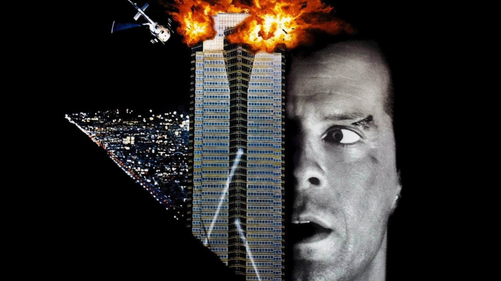
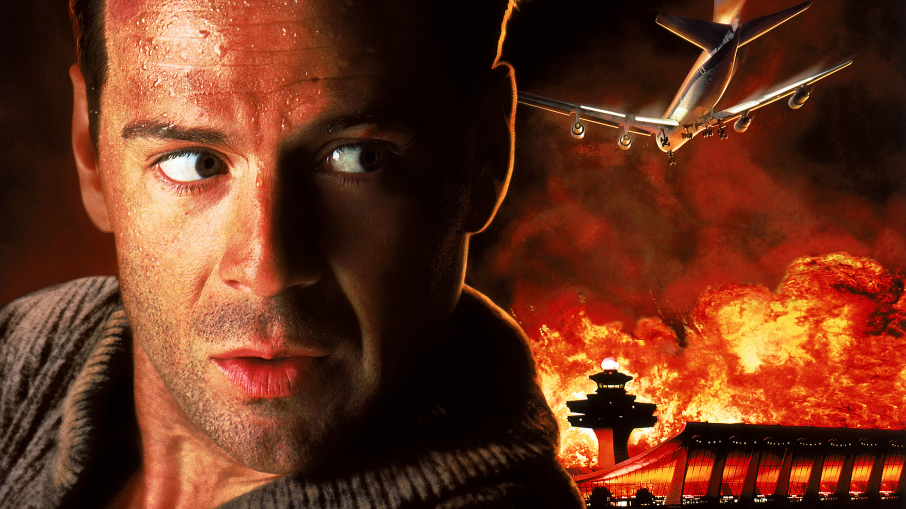
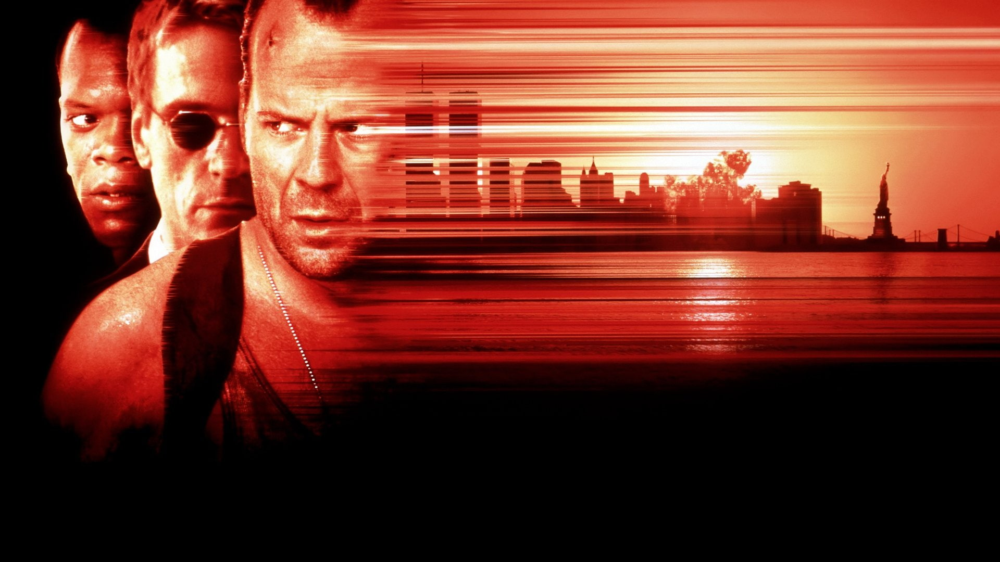
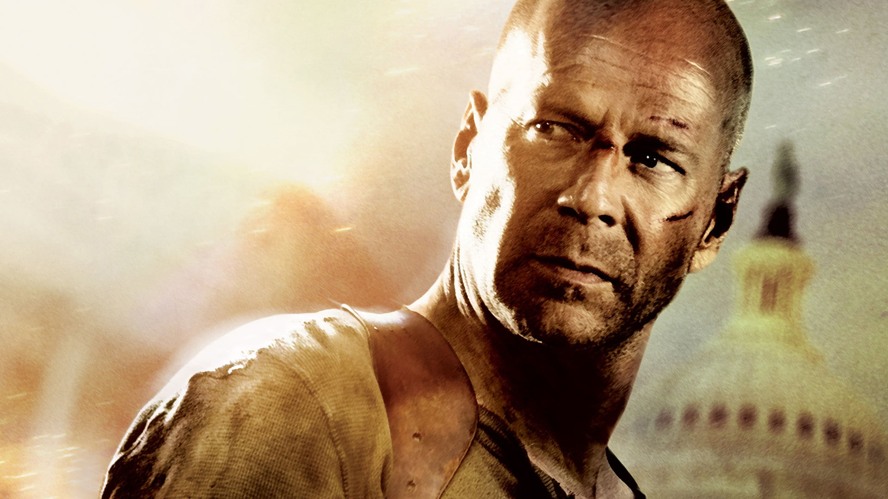
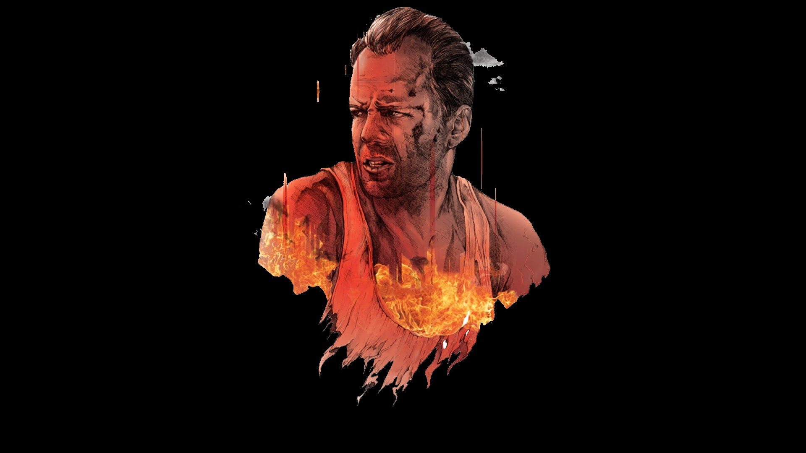

Die Hard or John McClane was originally based on the fictional character Detective Joe Leland from Roderick Thorp's bestselling 1979 novel Nothing Lasts Forever. Other aspects are derived from Frank Malone from Walter Wager's 1987 novel 58 Minutes (adapted as Die Hard 2).
Die Hard villain Hans Gruber describes him as "just another American.... who thinks he's John Wayne," to which McClane replies that he "was always partial to Roy Rogers." He is described as being a "foul-mouthed, wisecracking, no-nonsense New York cop with an itchy trigger finger ... and a never-say-die maverick spirit."
McClane's marriage is in a constant state of crisis, his vigilantism and disregard for authority have put him in danger of losing his job more than once, and he is a chain-smoker who is described by Inspector Cobb in Die Hard with a Vengeance as being "two steps away from becoming a full blown alcoholic", on which McClane jokingly corrects him saying only "one step".
McClane is consistently portrayed as a reluctant hero who, with little or no assistance from others, is required against his wishes to thwart the elaborate plans of a group of like-minded villains because no one else is in a position to do so. The trailer for the first Die Hard film states, "The last thing McClane wants is to be a hero, but he doesn't have a choice." In the second film, he is told "You're the wrong guy in the wrong place at the wrong time", to which he replies, "The story of my life." In the fourth film, he says he gets involved in dangerous situations "because there is nobody else to do it" and if there were, he would gladly let someone else do it. Unlike many "one man army" action heroes of the 1980s, the events of the movie actually take their toll on McClane physically, with McClane entering the climax of the movie severely injured.
Depiction
Die Hard

In the beginning of the first film, New York City Police Department Detective John McClane is seen traveling to Los Angeles to attend a Christmas Eve party at Nakatomi Plaza, the workplace of his recently separated wife Holly Gennero (Bonnie Bedelia); she and their two children, Lucy and John Jr., live in Los Angeles.
Shortly after McClane arrives at the party, Hans Gruber (Alan Rickman), a recently excommunicated member of a radical West German political movement, initiates his plan to steal $640 million worth of bearer bonds stored in the Nakatomi Corporation's vault. Hans and a legion of mostly European henchmen under his command take hostage the Nakatomi Corporation employees and Holly in a bid to conceal the theft under the guise of a failed terrorist act.
McClane evades detection of the group and hides throughout Nakatomi Plaza, systematically killing the group members as he attempts to disrupt their plot. Hans, aware of John's presence and his name, eventually identifies Holly as John's wife and takes her as his personal hostage. At the climax of the film, a badly injured McClane locates Hans and Holly near the vault on the 30th floor. Hans is shot by McClane and falls through a shattered window, but manages to grab onto Holly's wristwatch. Hans tries one last time to shoot them both, but McClane unstraps the watch and Hans falls to his death.
Die Hard 2

End of first movie, aftermath events, McClane transfers to the Los Angeles Police Department. He dislikes his rise to national fame. Dialogue in the second film reveals that he was featured in People Magazine, did a spot on Nightline, and was referred to (by Colonel Stuart) as "the policeman hero who saved the Nakatomi hostages" along with a local news crew.
In Die Hard 2, on Christmas Eve, mercenaries seize control of Dulles International Airport 25 miles west of Washington, D.C. They take control of the airport's communications and threaten to cause plane crashes unless their demands are met. Holly is stranded, her plane circles overhead. McClane discovers a conspiracy between the mercenaries and an active military unit to rescue a notorious dictator from being imprisoned for crimes against humanity. He foils their plans and provides a visual landing signal for the circling aircraft by exploding the plane the villains were using for their exit strategy.
Die Hard with Vengeance

He has returned to New York City in Die Hard with a Vengeance, continuing his work as a Lieutenant with the NYPD. He is separated from his wife, suspended from the police force (although what he did to get suspended is unknown, it is implied to be due to his alcoholism), and has become a borderline alcoholic. At the beginning of the film, an unidentified terrorist known only by the name "Simon" (Jeremy Irons) has detonated at least one bomb in the city and threatens to detonate others unless McClane undertakes to solve a series of challenges and riddles modeled after the children's game Simon says.
A shopkeeper from Harlem, Zeus Carver (Samuel L. Jackson), saves McClane during the first challenge and is forced to further accompany McClane at Simon's request.
After attempting to solve and complete several riddles and challenges, the FBI finally reveal to McClane that "Simon" is Simon Peter Gruber, the brother of Hans Gruber (the antagonist of the first film). It is assumed by the FBI that at least part of Simon's motive involves seeking revenge against McClane for his brother's death. Like Hans, Simon is determined to use acts of terror as a smokescreen to perpetrate thievery. Using a fake bomb threat concerning New York City area schools, Simon draws nearly all of the city's police force away from his target: New York's Federal Reserve. While the police frantically search local schools to locate the alleged bomb, Simon raids the gold bullion held in the underground vault of the Reserve and flees towards the Canada–US border.
Die Hard 4.0

And the fourth film, Live Free or Die Hard (titled Die Hard 4.0 in releases outside North America), which takes place on Independence Day, takes place 13 years later. McClane is assigned to take hacker Matt Farrell (Justin Long) into FBI custody. McClane has been on the force over 30 years, and is a senior detective, most likely a detective squad commander, since he holds the rank of lieutenant. Although McClane's NYPD file, accessed by Thomas Gabriel, notes he has been a Lieutenant since 1987, it also states he currently holds the rank of Detective. Terrorists led by Thomas Gabriel (Timothy Olyphant), are conducting a fire sale to bidders, taking out the nation's infrastructure: power plants, traffic lights, transportation, and financial markets.
McClane has been divorced from Holly for ten years, not speaking to his daughter Lucy (Mary Elizabeth Winstead), who is kidnapped by Gabriel as leverage. McClane's previous actions seem forgotten. Farrell is unaware of his track record of thwarting bad guys. McClane cynical about his fame. With Farrell, McClane again thwarts disaster. Farrell counters Gabriel's hacks, while McClane eliminates his men. The culmination is when McClane shoots through his own shoulder to kill Gabriel.
His actions restore Lucy to friendliness. She introduces herself as Lucy McClane to Farrell. In the past, she had introduced herself as Lucy Gennero, and told guys her father was dead.
Catchphrase(NSFW)
Reply of the hero. Throughout the films, McClane is known for his catchphrase, "Yippee-ki-yay, motherfucker". He frequently says it to taunt his adversaries, or in the moments before killing them.
McClane adopts the phrase in the first film, Die Hard, when villain Hans Gruber calls him a cowboy and asks if he thinks he stands a chance. McClane replies, "Yippee-ki-yay, motherfucker". At the end of the film, before his death at the hands of McClane, Gruber echoes the phrase before McClane overpowers him.
At the end of Die Hard 2, he delivers it before lighting a trail of fuel to destroy the enemy airplane.
At the end of Die Hard with a Vengeance, he says it in a low voice after shooting down the enemy helicopter.
In the fourth film, Live Free or Die Hard, McClane is held captive by cyber-terrorist Thomas Gabriel. Gabriel taunts him, claiming that McClane's tombstone will read "always in the wrong place at the wrong time". McClane replies, "How about 'yippee-ki-yay, motherfucker'?" as he shoots himself through the shoulder in order to kill Gabriel. The last two syllables are drowned out by the gunshot in the theatrical version. In the "unrated version," the line is altered to remain intact.
In the fifth film, A Good Day to Die Hard, McClane says the catchphrase before driving a truck out of an airborne helicopter in the final confrontation in Chernobyl. The film title references the catchphrase's reputed meaning, a Native American war-cry meaning "This is a good day to die!"
Reception

Deservedly Empire ranked him number 12 on their list of the 100 Greatest Movie Characters of All Time in 2008 and number 7 in 2015. In a survey by MTV, "accomplished" filmmakers, actors and fans voted on the "Greatest Movie Badass of All Time". McClane came in third, behind only Ellen Ripley and Dirty Harry. In April 2009, Entertainment Weekly ranked John McClane sixth in list of the top twenty "All-Time Coolest Heroes in Pop Culture", describing "Bruce Willis' wisecracking, terrorist-foiling New York cop" character as "the anti-Bond". The magazine called the characters portrayed by Keanu Reeves in Speed, Wesley Snipes in Passenger 57, and Jean-Claude Van Damme in Sudden Death as "copycat descendants" of John McClane.
Bruce Willis was called "an excellent casting choice as a sardonic action hero."